Preamble
Dealing with high complexity
In highly complex settings, two broad frameworks are commonly used:
- Sequential (or recursive) approaches, which enable information sharing across models and allow for step-by-step updating as new data become available.
- Distributed approaches, which address privacy concerns and make it possible to analyze very large datasets by distributing computation and overcoming scalability challenges. 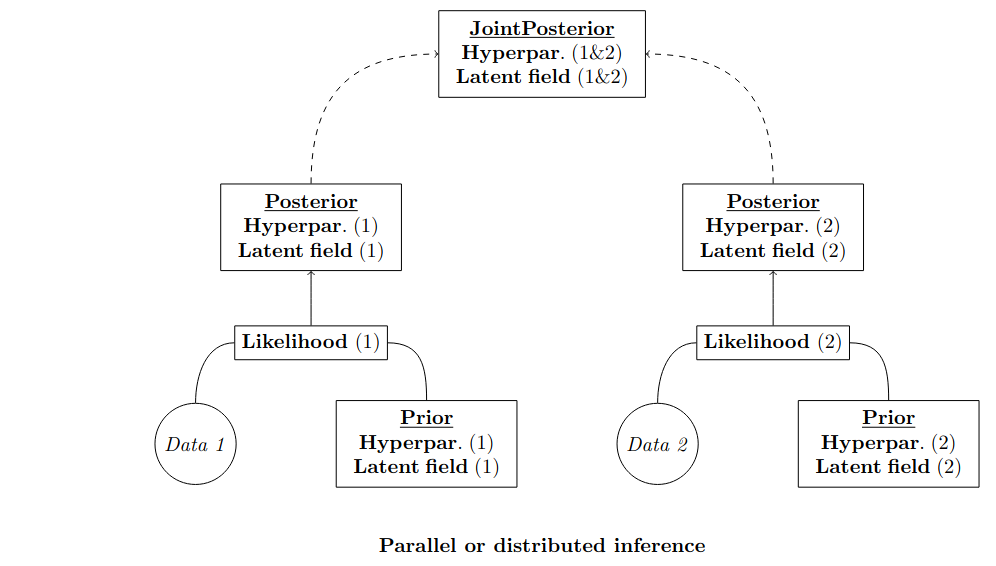 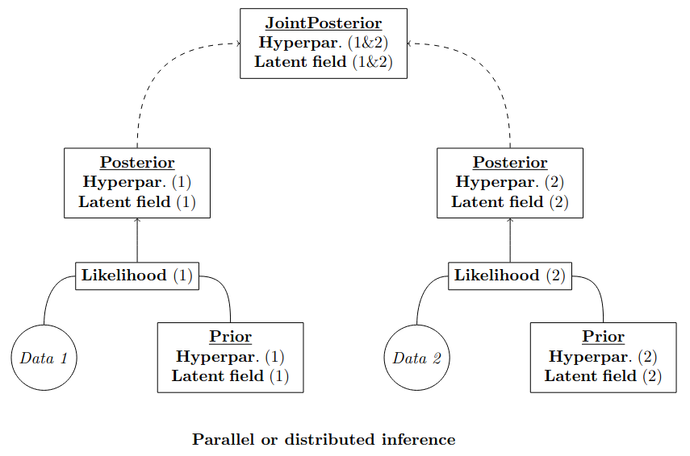
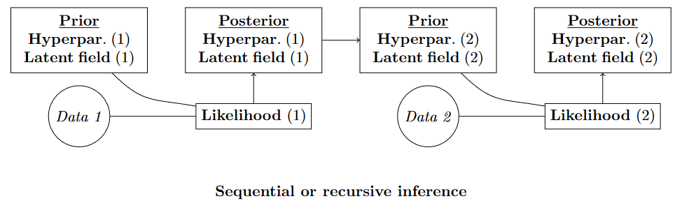
The developments in these topics are based on the INLA (Integrated Nested Laplace Approximations) method.
Outline
- Introduction
- Bayesian Inference
- INLA
- Spatial and Spatio-Temporal Models and Data
- Dealing with high complexity
- Updating model information
- Bayesian Feedback
- Sequential Consensus
- Distributed and Recursive Inference
- Distributed Inference (DI)
- Recursive Inference (RI)
- Partitioning model structures
- Combining Distributed and Recursive Inference
- Conclusions
Introduction
Bayesian inference
Bayesian inference is one the two main approaches to perform statistical inference. It is grounded in the Bayes’ theorem:
\[\begin{equation} \pi(\boldsymbol\xi, \mathbf{y}) = \pi(\mathbf{y} \mid \boldsymbol\xi) \pi(\boldsymbol\xi) = \pi(\boldsymbol\xi \mid \mathbf{y}) \pi(\mathbf{y}) \Rightarrow \boxed{\textcolor{red}{\pi(\boldsymbol\xi \mid \mathbf{y})} = \frac{\textcolor{green}{\pi(\mathbf{y} \mid \boldsymbol\xi)} \textcolor{blue}{\pi(\boldsymbol\xi)}}{\textcolor{orange}{\pi(\mathbf{y})}}}, \end{equation}\] where \(\pi(\xi \mid \mathbf{y})\) is the posterior distribution of the model parameters \(\xi\), \(\pi(\mathbf{y} \mid \boldsymbol\xi)\) is the likelihood (or observational model), \(\pi(\xi)\) is the prior distribution of the model parameters and \(\pi(\mathbf{y})\) is the marginal likelihood, \(\pi(\mathbf{y}) = \int_{\xi} \pi(\mathbf{y} \mid \boldsymbol\xi)\pi(\boldsymbol\xi)d\boldsymbol\xi\).
However, behind such an apparently simple expression lies a remarkably rich and elegant collection of perspectives, together with the theoretical foundations that constitute the underlying substrate of this theorem.
Bayesian inference
It may seems that a straight possibility is to just solve analitically the previous equation, but nothing fardest from reality, as only some simple (toy) models can be truelly solve in this way, due to the difficulty of calculate the marginal likelihood \(\pi(\mathbf{y})\).
Therefore, within the Bayesian framework, several methods are available for inferring the parameters \(\boldsymbol{\xi}\), including:
- Monte Carlo (MC) methods,
- Markov Chain Monte Carlo (MCMC),
- Adaptive Gaussian–Hermite Quadrature (AGHQ),
- Variational Inference (VI), and
- Integrated Nested Laplace Approximations (INLA).
INLA
- INLA is an ad hoc method, focused on obtaining the marginal posterior distributions of the latent field (\(x_i\)) and the hyperparameters (\(\theta_i\)):
\[\begin{equation} \begin{array}{c} \pi(\theta_i \mid \mathbf{y}) = \int_{\boldsymbol\theta_{-i}\in \boldsymbol\Theta}\int_{\mathbf{x} \in \mathbf{X}} \pi(\mathbf{x}, \boldsymbol\theta \mid \mathbf{y}) d\mathbf{x}d\boldsymbol\theta_{-i}, \\ \pi(x_i \mid \mathbf{y}) = \int_{\boldsymbol\theta \in \boldsymbol\Theta} \int_{\mathbf{x}_{-i} \in \mathbf{X}} \pi(\mathbf{x}, \boldsymbol\theta \mid \mathbf{y}) d\mathbf{x}_{-i}d\boldsymbol\theta. \end{array} \end{equation}\]
- It is focused for hierarchical models with latent Gaussian fields. Therefore, we usually have the following structure for models in INLA:
\[\begin{equation} \begin{array}{c} y_i \mid \mathbf{x}, \boldsymbol\theta \sim \ell(\mu_i, \boldsymbol\theta_1),\\ \mathbb{E}(y_i) = \mu_i = g^{-1}(\eta_i)=g^{-1}(\mathbf{A}_i\mathbf{x}),\\ \mathbf{x} \mid \boldsymbol\theta_2 \sim GMRF(\boldsymbol\mu, \mathbf{Q}(\boldsymbol\theta_2)),\\ \boldsymbol\theta \sim \pi(\boldsymbol\theta_1, \boldsymbol\theta_2). \end{array} \end{equation}\]
INLA
- To achieve this INLA uses a deterministic exploration with a quadrature rule to compute the marginal of the latent field, along with another key strategies to compute the marginal of the hyperparameters. For the joint marginal of the hyperparameters INLA uses the following functional form, evaluated at the mode of conditional posterior of the latent field:
\[\begin{equation} \tilde{\pi}(\boldsymbol\theta \mid \mathbf{y}) = \left.\frac{\pi(\mathbf{y} \mid \mathbf{x}, \boldsymbol\theta) \pi(\mathbf{x} \mid \boldsymbol\theta) \pi(\boldsymbol\theta)}{\tilde{\pi}_G(\mathbf{x} \mid \boldsymbol\theta, \mathbf{y})}\right|_{\mathbf{x} = \mathbf{x}^*(\boldsymbol\theta)}. \end{equation}\]
- And for the marginal of the latent field INLA uses a quadrature rule to approximate the integration:
\[\begin{equation} \pi(x_i \mid \mathbf{y}) = \iint\pi(x \mid \boldsymbol\theta, \mathbf{y}) \pi(\boldsymbol\theta \mid \mathbf{y}) d\mathbf{x}_{-i}d\boldsymbol\theta \approx \sum_{k=1}^K \tilde{\pi}(x_i \mid \boldsymbol\theta^k, \mathbf{y}) \tilde{\pi}(\boldsymbol\theta^k \mid \mathbf{y})\Delta_k. \end{equation}\]
INLA
Conditional posterior of the latent field
The conditional posterior of the latent field is computed as the Gaussian approximation at the mode of the true conditional posterior:
\[\begin{equation} \tilde{\pi}_G(\mathbf{x} \mid \mathbf{y}, \boldsymbol\theta) = C(\mathbf{y}, \boldsymbol\theta) \exp\left[ (\mathbf{x} - \mu(\mathbf{y}, \boldsymbol\theta))^\top \mathbf{Q}(\mathbf{y}, \boldsymbol\theta) (\mathbf{x} - \mu(\mathbf{y}, \boldsymbol\theta)) \right], \end{equation}\]
where \(\mu(\mathbf{y}, \boldsymbol\theta)\) is the mean of the Gaussian approximation at the mode (\(\mathbf{x}^*\)) of the true posterior, and \(\mathbf{Q}(\mathbf{y}, \boldsymbol\theta)\) is the negative Hessian at the mode.
- Mean of the Gaussian approximation of the conditional posterior:
\[ \mu(\mathbf{y}, \boldsymbol\theta) = \mathbf{x}^*= \arg\min_{x}\left\{ - \log\pi(\mathbf{y} \mid \mathbf{x}, \boldsymbol\theta) - \log\pi(\mathbf{x} \mid \boldsymbol\theta) \right\}. \]
- Precision matrix of the Gaussian approximation:
\[ \mathbf{Q}(\mathbf{y}, \boldsymbol\theta) = \mathbf{Q}(\boldsymbol\theta) - \left[\mathbf{A}^\top \frac{\partial^2 \log\pi(\mathbf{y} \mid \boldsymbol\eta, \boldsymbol\theta)}{\partial \boldsymbol\eta^2} \mathbf{A} \right]_{\boldsymbol\eta = \mathbf{A}\mathbf{x}^*}. \]
INLA
Joint marginal posterior of hyperparameters
The joint marginal posterior of the hyperparameters is one of the main components that we need in the INLA approach, as we need to compute the modal configuration of the joint marginal posterior of the hyperparamters to build a integration scheme for the marginal of the latent field.
The formula to compute the posterior (and the configuration) of the joint marginal posterior is, as stated before, \[ \tilde{\pi}(\boldsymbol\theta \mid \mathbf{y}) = \left.\frac{\pi(\mathbf{y} \mid \mathbf{x}, \boldsymbol\theta) \pi(\mathbf{x} \mid \boldsymbol\theta) \pi(\boldsymbol\theta)}{\tilde{\pi}_G(\mathbf{x} \mid \boldsymbol\theta, \mathbf{y})}\right|_{\mathbf{x} = \mathbf{x}^*(\boldsymbol\theta)}. \]
Therefore, using this equation we can compute the modal configuration by finite differences, as the analytical expression for this equation is not generally available:
\[ \boldsymbol\theta^* = \arg \min_{\boldsymbol\theta} \left\{-\log \pi(\mathbf{y}\mid \mathbf{x}, \boldsymbol\theta) -\log\pi(\mathbf{x} \mid \boldsymbol\theta) -\log\pi(\boldsymbol\theta) + \tilde{\pi}_G(\mathbf{x}\mid \mathbf{y}, \boldsymbol\theta) \right\}_{\mathbf{x}=\mathbf{x}^*(\boldsymbol\theta)}, \]
where \(\mathbf{x}^*\) is the mode of the conditional posterior of the latent field for each \(\boldsymbol\theta\) set of values.
INLA
Marginal posterior of the latent field
The marginal posterior distribution for each latent field node (\(\pi(x_i \mid \mathbf{y})\)) is computed by the following expression: \[ \tilde{\pi}(x_i \mid \mathbf{y}) = \sum_{k=1}^K \tilde{\pi}(x_i \mid \boldsymbol\theta^k, \mathbf{y}) \tilde{\pi}(\boldsymbol\theta^k \mid \mathbf{y}) \Delta_k, \] where \(\Delta_k\) is the weight from the integration scheme for each support point \(\theta^k\), \(\tilde{\pi}(\boldsymbol\theta^k \mid \mathbf{y})\) is the joint marginal posterior computed previously, and \(\tilde{\pi}(x_i \mid \mathbf{y}, \boldsymbol\theta^k)\) is the most delicate quantity to calculate.
The following strategies are proposed to compute this quantity in the INLA methodology:
- marginalized the Gaussian approximation of the conditional posterior at the mode,
- apply a Laplace approximation for each node,
- use a simplified Laplace approximation (a Taylor expansion of 3rd order), or
- use the Gaussian approximation with a Variational Bayes (VB) correction of the mean.
Once we have computed all these quantities we can calculate goodness-of-fit measures like DIC, WAIC, CPO, etc.
INLA
Marginal posterior of hyperparameters
The marginal posterior of the hyperparameters can be computed following several different strategies. Some of them are:
- Marginalized a Gaussian approximation around the mode of the joint marginal posterior.
- Numerical integration using a exploration grid and interpolation.
- Direct interpolation: \(\pi(\theta_j \mid \mathbf{y}) = \int_{\boldsymbol\theta_{-j}\in \boldsymbol\Theta} I(\boldsymbol\theta)d\boldsymbol\theta_{-j}\), or
- Interpolation using an asymmetric Gaussian apprximation.
- Numerical integration-free algorithm (default in
R-INLA).
The default approach (numerical integration-free algorithm) levarages an asymmetric Gaussian approach, where
\[ \tilde{\pi}(\theta_j \mid \mathbf{y}) \propto \left\{ \begin{array}{l} \exp\left(-\frac{1}{2(\sigma^+_j)^2}\theta_j^2 \right) \\ \exp\left(-\frac{1}{2(\sigma^-_j)^2}\theta_j^2 \right) \end{array} \right. \]
and leverages the following lemma: \(-\frac{1}{2}(\theta_j, \mathbb{E}(\boldsymbol\theta_{-j} \mid \theta_j))^\top \boldsymbol\Sigma^{-1}_{\boldsymbol\theta} (\theta_j, \mathbb{E}(\boldsymbol\theta_{-j} \mid \theta_j)) = -\frac{1}{2}\frac{\theta_{j}^2}{\Sigma_{jj}}\).
Spatial and Spatio-Temporal Models and Data
- Introduction
- Spatial and Spatio-Temporal Models and Data
- Dealing with high complexity
- Updating model information
- Distributed and Recursive Inference
- Implementations
- Conclusions
Spatial and Spatio-Temporal Models and Data
Spatial and spatio-temporal models incorporate spatial (or spatio-temporal) components into the model structure to assess how these components influence the inference procedure and what information related to the spatial (or spatio-temporal) dependence they capture.
In classical spatial statistics are three types of spatial data:
- areal data,
- geostatistical data, and
- point pattern data (point processes).
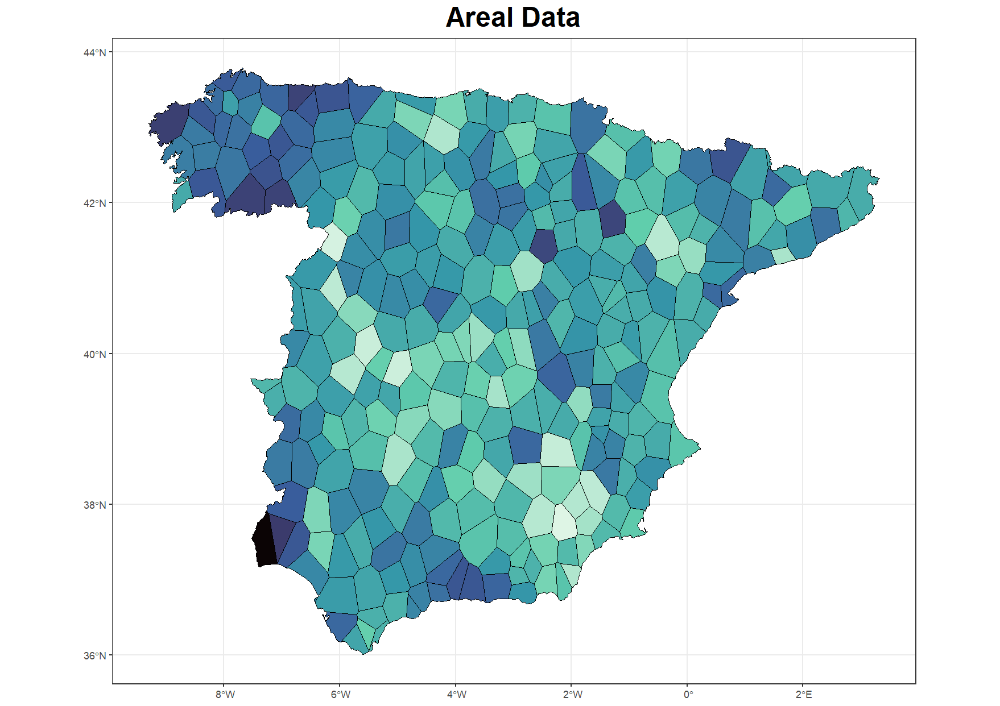 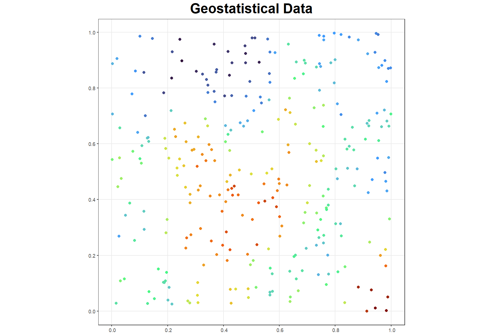 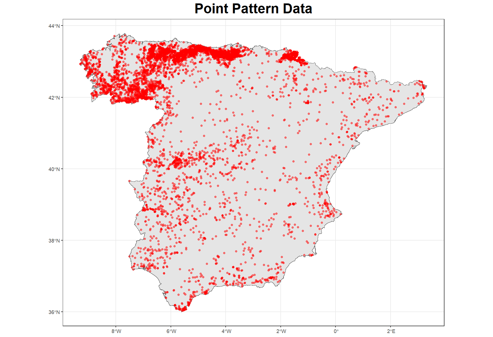
Spatial and Spatio-Temporal Models and Data
For these three data types (areal, geostatistical, and point pattern data), different modeling approaches exist in which latent components (prior distributions) play a central role, although they may be embedded differently across models. In particular, these models can be characterized as follows:
- Areal model:
\[ \mathbf{u} \sim \text{GMRF}(\boldsymbol\mu, \mathbf{Q} = f(\mathbf{D,W,\boldsymbol\theta})), \quad \mathbf{Q}_{st} = \mathbf{Q}_s \otimes \mathbf{Q}_t \; \text{or} \; \mathbf{Q}_{st} = \mathbf{Q}_t \otimes \mathbf{Q}_s. \]
- Geostatistical model:
\[ \mathbf{Q} = \tau^2 (\kappa^4 \mathbf{C} + 2\kappa^2\mathbf{G} + \mathbf{G}\mathbf{C}^{-1}\mathbf{G}). \]
- Point processes:
\[ \log \pi(\mathbf{y} \mid \mathbf{x}, \boldsymbol\theta) = |\boldsymbol\Omega|-\int_{\mathbf{s} \in \boldsymbol\Omega} \lambda(s \mid \mathbf{x}, \boldsymbol\theta) + \sum_{i=1}^n \log(\lambda(s_i \mid \mathbf{x}, \boldsymbol\theta)). \]
Spatial and Spatio-Temporal Models and Data
What are areal data, and how are they modeled?
The study region is partitioned into non-overlapping areas (e.g., districts, administrative regions, or grid cells). For example, continuous observations may be aggregated by area.
Typical applications include:
- Disease mapping (health outcomes aggregated by region)
- Ecology (abundance and occupancy)
- Socio-economic analysis (e.g., census data)
To model spatial dependence, areal models—also interpretable as network or graphical models—often use:
- Conditional Autoregressive (CAR) models
- Intrinsic CAR (ICAR) models
These approaches capture spatial dependence between neighboring areas.
Spatial and Spatio-Temporal Models and Data
Conditional Autorregresive (CAR) Structure
For each area \(i\):
\[ x_i \mid x_{-i} \sim \mathcal{N}\left( \mu_i + \sum_{j \sim i} w_{ij}(x_j - \mu_j),\; \sigma_i^2 \right) \]
- \(j \sim i\): neighbors of area \(i\), i.e., \(j \in \mathcal{R}(i)\).
- The weights \(w_{ij}\) define the strength of dependence and are encoded in the adjacency (neighborhood) matrix \(\mathbf{W}\).
- The smoothing properties depend critically on how the neighborhood structure is defined.
The model is specified through its full conditional distributions–hence the name conditional autoregressive. Using Brook’s lemma, the CAR model can be expressed in joint form:
\[ \pi(\mathbf{x}) \propto \exp\left[ -\frac{1}{2} (\mathbf{x}-\boldsymbol{\mu}) \mathbf{Q} (\mathbf{x}-\boldsymbol{\mu})^\top \right], \]
where the precision matrix is: \(\mathbf{Q} = \tau (\mathbf{D} - \mathbf{W})\).
Spatial and Spatio-Temporal Models and Data
ICAR Model. Problem and solutions:
The main limitation of the Intrinsic CAR (ICAR) model is that its precision matrix is not invertible (i.e., the inverse does not exist). Therefore, marginal variances and other marginal properties cannot be directly derived from the model.
- The matrix \(\mathbf{D} - \mathbf{W}\) is singular, and therefore the distribution is improper.
- This specification is known as the Intrinsic CAR (ICAR) model.
Several approaches can be used to address this issue:
Impose a sum-to-zero constraint: \[ \mathbf{1}^\top \mathbf{x} = 0 \quad \Rightarrow \quad \pi(\mathbf{x} \mid \mathbf{C}\mathbf{x} = \mathbf{e}). \] This yields a constrained Gaussian Markov Random Field (GMRF).
Define proper versions by modifying the structure matrix \(\mathbf{Q}(\boldsymbol{\theta}, \tau) = \tau \mathbf{R}(\boldsymbol{\theta})\), for example:
\[ \begin{array}{c} \mathbf{Q} = \tau (\lambda (\mathbf{D} - \mathbf{W}) + (1-\lambda)\mathbf{I}), \quad \lambda \in (0,1), \quad \text{Leroux model}, \\ \mathbf{Q} = \tau (\mathbf{D} + d\mathbf{I} - \mathbf{W}), \quad d>0, \quad \text{Proper Besag model}. \end{array} \]
Friction, Boundaries, and Barriers
Less Common Extensions of Proper CAR Models
There are several extensions of the standard areal model that are less well known and less widely used. One crucial component in defining a (P)CAR model is the adjacency matrix. Instead of assigning equal weights to all neighboring areas, it is possible to introduce more flexible specifications for the weights. Some examples include:
- Gaussian kernel weights with covariates (interpreted as friction or permeability driven by covariate differences):
- \(\mathbf{W}_{ij} = \exp\!\left(-\frac{1}{2}\frac{(x_i - x_j)^2}{l^2}\right)\),
- \(\mathbf{W}_{ij} = \exp\!\left(-\frac{1}{2}\frac{||\mathbf{X}_i - \mathbf{X}_j||^2}{l^2}\right)\),
- \(\mathbf{W}_{ij} = \displaystyle \prod_{k=1}^K\exp\!\left(-\frac{1}{2}\frac{||x_{ki} - x_{kj}||^2}{l_k^2}\right).\)
- Barrier models (fixed or adaptively varying permeability):
- \(\mathbf{W}_{ij} = \exp(-\lambda_B)\), if \(j \in \mathcal{B}\); otherwise \(\mathbf{W}_{ij} = 1\) or \(0\) (fixed).
- \(\mathbf{W}_{ij} = \exp(-\lambda_B(t))\), if \(j \in \mathcal{B}\); otherwise \(\mathbf{W}_{ij} = 1\) or \(0\) (adaptavely).
- Model combinations or combined regularization:
- \(\sqrt{1-\phi} \cdot \mathbf{x}_{L} + \sqrt{\phi} \cdot \mathbf{x}_{ML}\) (it would require an informative prior in some hyparameters of \(\mathbf{x}_{ML}\) to avoid the confounding with \(\mathbf{x}_L\)).
- \(\pi(x \mid \boldsymbol\theta_c, \boldsymbol\theta_1, \boldsymbol\theta_2, \phi) = \pi_L(\mathbf{x} \mid \boldsymbol\theta_c, \boldsymbol\theta_1, \phi) \cdot \pi_{ML}(\mathbf{x} \mid \boldsymbol\theta_c, \boldsymbol\theta_2, \phi)\), which redefines the precision structure (and therefore the conditional behaviour): \(\mathbf{Q}= (1-\phi)\mathbf{Q}_L + \phi\mathbf{Q}_{ML}\).
Friction, Boundaries, and Barriers
Examples with Gaussian kernel weights with covariates
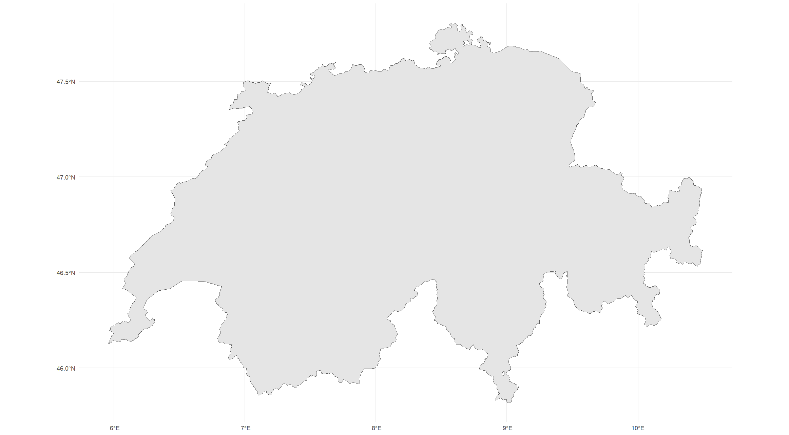
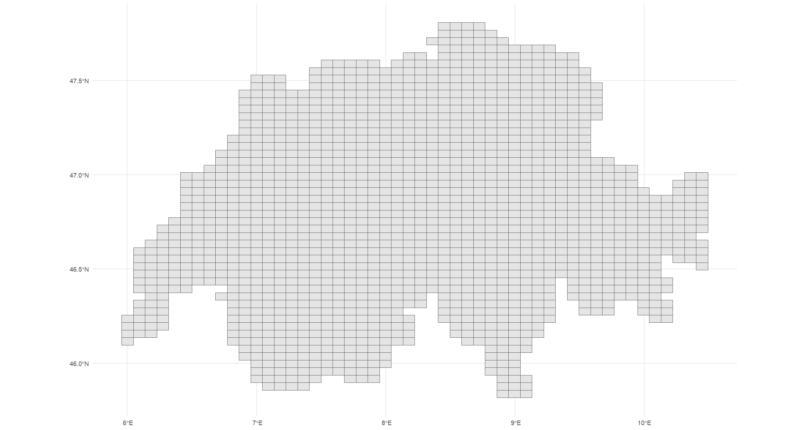
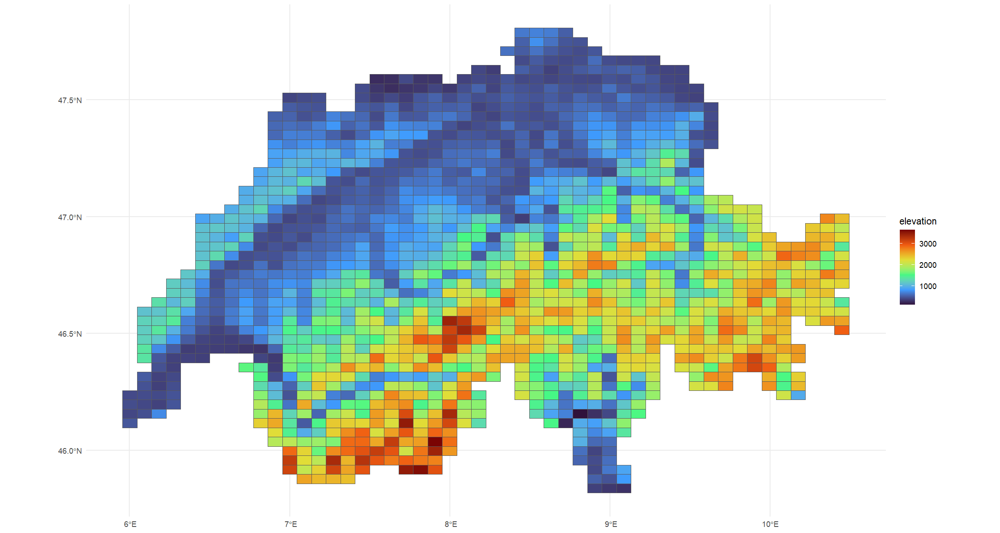
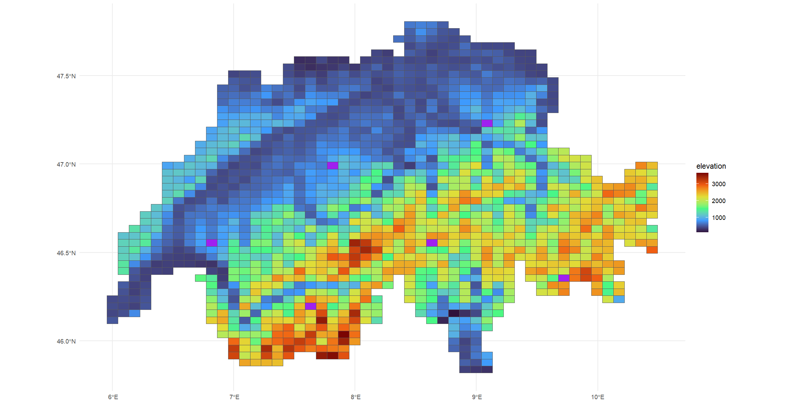
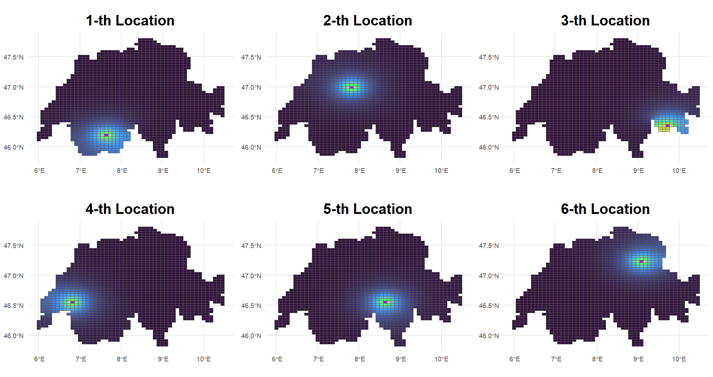
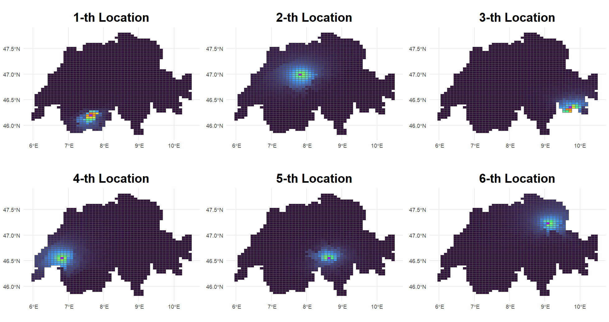
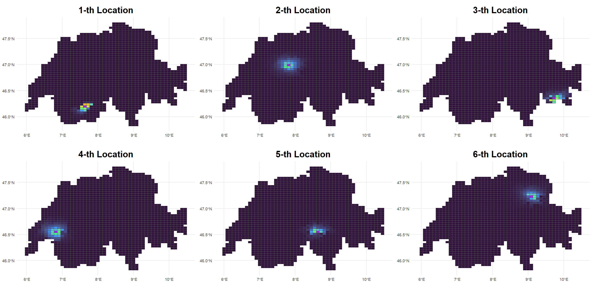
Friction, Boundaries, and Barriers
Examples with fixed Barriers models and varying permeability
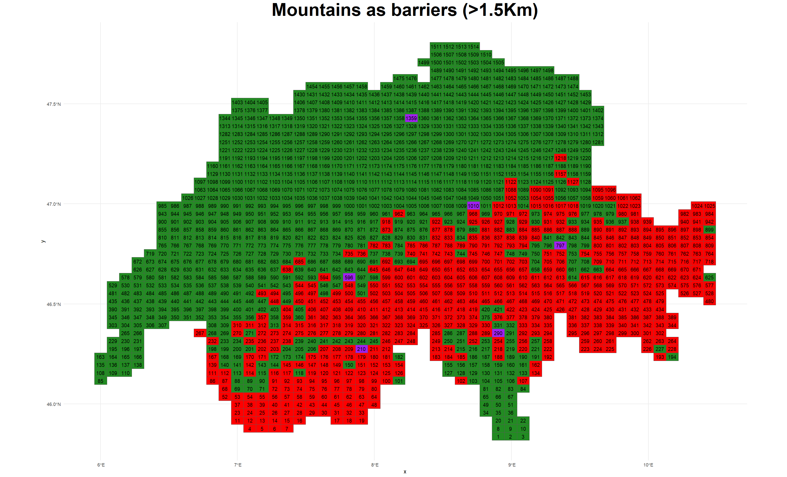
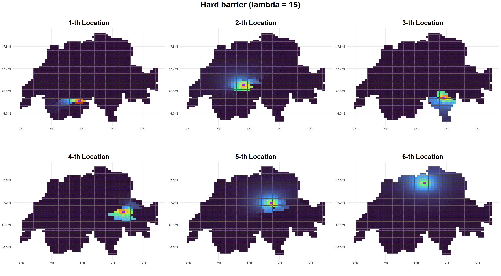

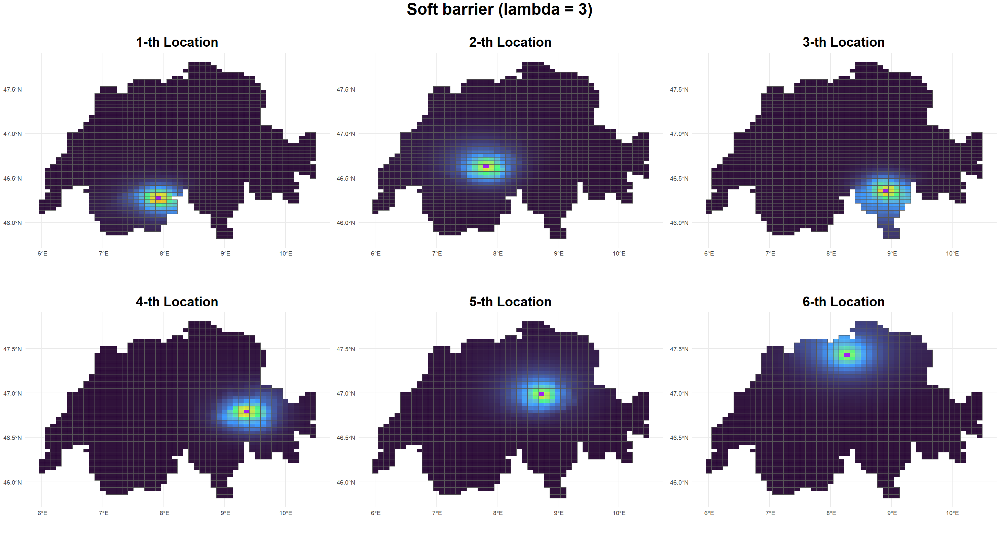
Friction, Boundaries, and Barriers
Compositional spatial data
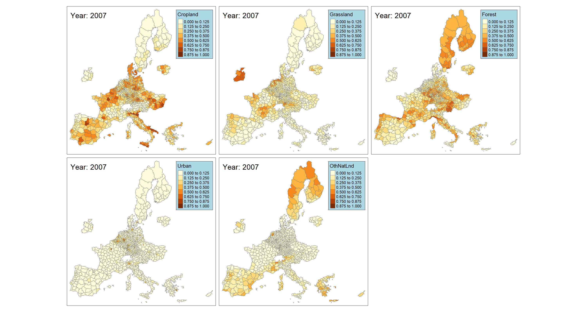
Friction, Boundaries, and Barriers
Downscaling models in CoDa
Downscaling models for compositional data (CoDa) can applied to land-use data to provide fine-scale spatial information while addressing issues from changing areal units, such as evolving NUTS regions over time , e.g. land use data from the European LAMASUS project. These models define spatial dependence on a continuous domain using a continuous Gaussian random field, which is then integrated over each area to produce area-level estimates. Land-use compositions are modeled through an additive log-ratio (ALR) transformation across five land-use categories, resulting in the following model specification. \[ \small \begin{array}{c} \mathbf{Y} \sim \text{MVN}(\boldsymbol\mu, \tau_e), \quad \mathbf{Y} = (\mathbf{y}_1 \mid \dots \mid \mathbf{y}_4), \;\boldsymbol\mu = (\boldsymbol\mu_1 \mid \dots \mid \boldsymbol\mu_1), \\ \boldsymbol\mu_1 = \beta_{01}\mathbf{1} + \mathbf{X}_i\boldsymbol\beta_1 + \mathbf{u}_{1s}(\mathbf{s}) + \mathbf{u}_{1t}(t) + \mathbf{u}, \\ \boldsymbol\mu_2 = \beta_{02}\mathbf{1} + \mathbf{X}_i\boldsymbol\beta_2 + \mathbf{u}_{2s}(\mathbf{s}) + \mathbf{u}_{2t}(t) + \mathbf{u}, \\ \boldsymbol\mu_3 = \beta_{03}\mathbf{1} + \mathbf{X}_i\boldsymbol\beta_3 + \mathbf{u}_{3s}(\mathbf{s}) + \mathbf{u}_{3t}(t) + \mathbf{u}, \\ \boldsymbol\mu_4 = \beta_{04}\mathbf{1} + \mathbf{X}_i\boldsymbol\beta_4 + \mathbf{u}_{4s}(\mathbf{s}) + \mathbf{u}_{4t}(t) + \mathbf{u}. \\ \end{array} \] In this formulation, the spatial component \(\mathbf{u}_{js}\) for the \(j\)-th log-ratio component is defined through a downscaling procedure, whereby a continuous Gaussian field, represented using the SPDE–FEM approach, is integrated over each \(i\)-th area: \[ u_{ji} = \frac{\int_{\mathbf{s} \in C_i}u_j(\mathbf{s})d\mathbf{s}}{|C_i|}. \]
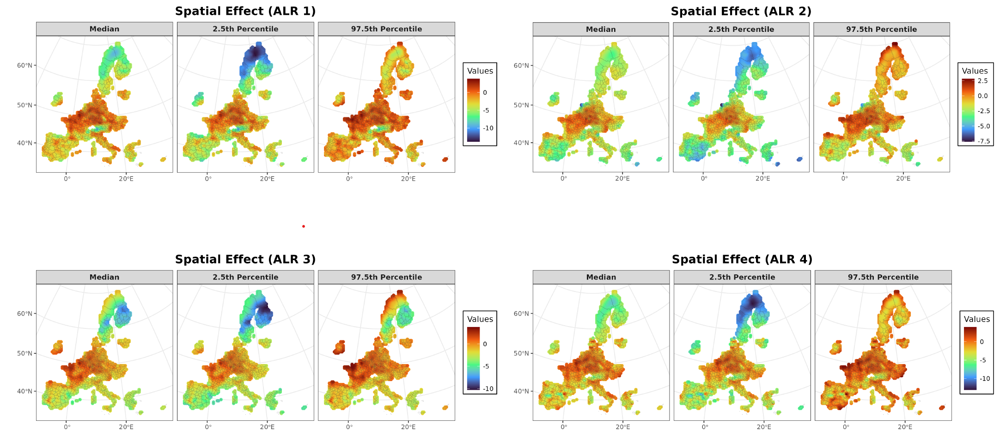
Dealing with high complexity
- Introduction
- Spatial and Spatio-Temporal Models and Data
- Dealing with high complexity
- Updating model information
- Distributed and Recursive Inference
- Implementations
- Conclusions
Dealing with high complexity
The term complexity is associated with very different meanings, even within the fields of mathematics, computer science, and physics. Here, we adopt a practical or operational interpretation of computational complexity in the context of statistical inference. From an operational perspective, the complexity of an inferential process refers to the difficulty of carrying out a task in terms of its computational procedure. This difficulty may arise from different sources and can have fundamentally different impacts on the inferential model.
In particular, we focus on several aspects of computational complexity related to computational cost:
- Computation time: the computational cost measured by the time required to fit a model.
- Operations per processor core: the workload in terms of the number of operations (FLOPs) required per processor core.
- Memory usage (RAM): the amount of memory required to perform the inference.
These aspects of computational complexity in statistical analysis are closely interrelated. For instance, an increase in the number of operations per core typically leads to longer computation times, while lower memory requirements often result in reduced computational time. Likewise, a smaller number of operations per core usually implies lower memory usage.
Dealing with high complexity
Computational complexity is encoded in a statistical model through its various components and through the inferential procedure itself. Assuming a fixed model and the INLA methodology, at least four key aspects can be identified as having a direct impact on the computational complexity of inference:
- Number of observations: the number of observations determines the dimension of the likelihood \[ \pi(\mathbf{y} \mid \boldsymbol\eta, \boldsymbol\theta) = \prod_{i=1}^n\pi(y_i \mid \eta_i, \boldsymbol\theta). \]
- Dimension of the latent field: the dimension of the latent field prior—and in particular of its posterior—directly affects both the number of required operations and memory usage, and therefore the overall computational cost: \[ \small \log\tilde{\pi}(\boldsymbol\theta \mid \mathbf{y}) = \left[\sum_{i=1}^n\log\pi(y_i \mid \mathbf{x}, \boldsymbol\theta) + |\mathbf{Q}(\boldsymbol\theta)| - \frac{1}{2} (\mathbf{x} - \boldsymbol\mu)^\top \mathbf{Q}(\boldsymbol\theta) (\mathbf{x} - \boldsymbol\mu) - |\mathbf{Q}_{x\mid y, \boldsymbol\theta}(\boldsymbol\theta)| + \frac{1}{2} (\mathbf{x} - \boldsymbol\mu_{x\mid y, \boldsymbol\theta})^\top \mathbf{Q}_{x\mid y, \boldsymbol\theta}(\boldsymbol\theta) (\mathbf{x} - \boldsymbol\mu_{x\mid y, \boldsymbol\theta}) \right]_{\mathbf{x} = \mathbf{x}^*}. \]
- The geometry (shape) of the posterior distribution: the (actual) geometry of the posterior distribution influences the optimization procedure used to locate the mode of the conditional posterior of the latent field, \[ \arg\min_{\mathbf{x}}-\log\pi(\mathbf{x} \mid \boldsymbol\theta, \mathbf{y}) = \arg\min_{\mathbf{x}} \{-\log\pi(\mathbf{y} \mid \mathbf{x}, \boldsymbol\theta) - \log\pi(\mathbf{x} \mid \boldsymbol\theta)\}. \]
- The initial point for optimization: the choice of the initial point for minimizing the negative log joint posterior of the hyperparamters, or equivalently the negative log conditional posterior, affects the number of operations required to reach the posterior mode.
Updating model information
- Introduction
- Spatial and Spatio-Temporal Models and Data
- Dealing with high complexity
- Updating model information
- Bayesian Feedback
- Sequential Consensus
- Distributed and Recursive Inference
- Implementations
- Conclusions
The updating of model information refers to a procedure capable of transferring information across models. In Bayesian statistics, Bayes’ theorem provides a natural mechanism for such information transfer: \[ \pi(\boldsymbol\xi \mid \mathbf{y}) = \frac{\pi(\mathbf{y} \mid \boldsymbol\xi) \pi(\boldsymbol\xi)}{\pi(\mathbf{y})}. \] This expression can, in general, be reformulated as: \[ \pi(\boldsymbol\xi \mid \mathbf{y}) \propto \left\{\begin{array}{l} \pi(\mathbf{y}_1 \mid \boldsymbol\xi) \cdot \left[ \pi(\mathbf{y}_2 \mid \boldsymbol\xi) \cdot \pi(\boldsymbol\xi)\right] \propto \pi(\mathbf{y}_1 \mid \boldsymbol\xi) \pi(\boldsymbol\xi \mid \mathbf{y}_2) \\ \left[\pi(\mathbf{y}_1 \mid \boldsymbol\xi) \cdot \pi(\boldsymbol\xi)^{1/2} \right] \cdot \left[\pi(\mathbf{y}_2 \mid \boldsymbol\xi) \cdot \pi(\boldsymbol\xi)^{1/2}\right] \propto \pi(\boldsymbol\xi \mid \mathbf{y}_1) \cdot \pi(\boldsymbol\xi \mid \mathbf{y}_2) \end{array}\right. \quad . \]
However, this formulation raises several fundamental computational and methodological questions:
- Marginal likelihood computation: how can the marginal likelihood \(\pi(\mathbf{y}_i)\) be computed efficiently, or avoided altogether, in practice?
- Closed-form posteriors: under what conditions is a closed-form expression for the partial posteriors \(\pi(\boldsymbol\xi \mid \mathbf{y}_i)\) available, and how should inference proceed when it is not?
- Sequential ordering: when closed-form expressions are unavailable, how does the ordering of datasets in a recursive or sequential update affect the resulting posterior?
- Consistency of inference: to what extent do different orderings and partitions of the data and the model lead to different inferential outcomes, and how can the resulting variability be controlled or mitigated?
Bayesian Feedback
Bayesian Feedback refers to a procedure for transferring information between models that share the same parameters but are associated with different observations of the same underlying phenomenon, \(\mathcal{M}(\mathbf{y}_1,\boldsymbol\xi)\) and \(\mathcal{M}(\mathbf{y}_2, \boldsymbol\xi)\). That is, it focuses on updating the model parameters \(\boldsymbol\xi\) of \(\mathcal{M}\).
The Bayesian Feedback procedure is characterized by defining prior distributions from the marginal posterior distributions of the parameters, thereby emphasizing the transfer of marginal information: \[ \pi(\xi \mid \mathbf{y}_2) \propto \pi(\mathbf{y}_2 \mid \boldsymbol\xi) \prod_{i=1}^{n}\pi(\xi_i \mid \mathbf{y}_1). \]
However, despite enabling information transfer across models, this approach presents several limitations:
- It requires the marginal posterior distributions associated with nodes of the latent field to be Gaussian in order for the transfer to be effective within
R-INLA. - Correlation between parameters is lost when information is transferred solely through marginal distributions. When the latent field contains sets of nodes with dependencies or correlations, marginal-based transfer cannot be used, as the dependence structure is not preserved in the new model.
- It inevitably discards information by transferring only marginal summaries, ignoring joint and higher-order dependence structures.
- It is not order independent.
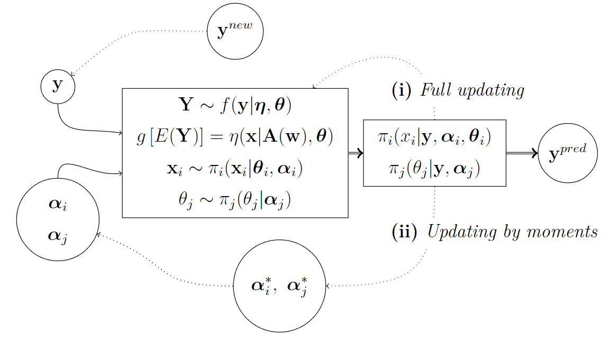
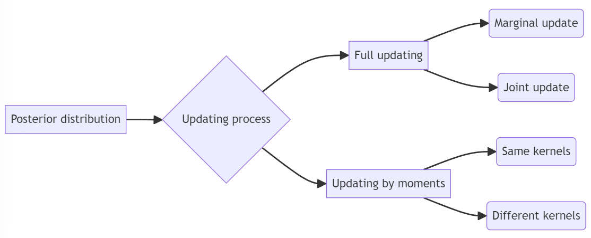
Sequential Consensus
To overcome the limitations of Bayesian Feedback–particularly those related to the transfer of information from correlated latent field nodes–and to enable a more flexible approach to sequential updating of model parameters, a sequential consensus approach is proposed within the INLA framework. Specifically, two algorithms are introduced: one for general sequential parameter updating, and another tailored to Big Data settings.
The general idea behind both algorithms is that we can perform an update of the fixed effects of the latent field and hyperparamters by the Bayesian Feedback procedure and then a consensus of the latent field nodes related to random effects. Therefore, for the fixed and hyperparameters the sequential update along a partitions of the data \(\mathbf{y} = \{\mathbf{y}_1, \dots, \mathbf{y}_n\}\) is perform as: \[ \begin{array}{c} \pi(x_k \mid \mathbf{y}) \approx C_k \cdot \pi(\mathbf{y}_1 \mid x_k) \prod_{i=2}^n \pi(x_k \mid \mathbf{y}_i), \\ \pi(\theta_m \mid \mathbf{y}) \approx C_m \cdot \pi(\mathbf{y}_1 \mid \theta_m) \prod_{i=2}^n \pi(\theta_m \mid \mathbf{y}_i). \end{array} \]
Once the sequential update is perform, it is possible to apply one of the following strategies to perform the consensus for the random effects: (i) marginal weighted averages and (ii) product of multivariate Gaussian densities. \[ \begin{array}{c} x_k \approx \sum_{i=1}^n w_i x_{ki} \quad (\text{marginal weighted averages}), \\ \pi(\mathbf{x}_k \mid \mathbf{y}) \approx \prod_{i=1}^n \pi(\mathbf{x}_k \mid \mathbf{y}_i) \quad (\text{product of multivariate Gaussian densities}). \end{array} \]
Sequential Consensus
Scheme of the algorithms
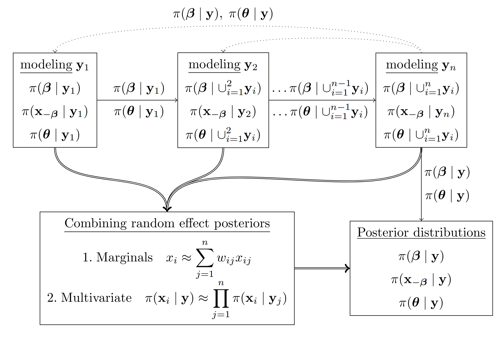
Distributed and Recursive Inference
- Introduction
- Spatial and Spatio-Temporal Models and Data
- Dealing with high complexity
- Updating model information
- Distributed and Recursive Inference
- Distributed Inference (DI)
- Recursive Inference (RI)
- Partitioning model structures
- Combining Distributed and Recursive Inference
- Implementations
- Conclusions
In this section, we present the proposed distributed and recursive inference approaches, which address many of the main limitations of Bayesian Feedback and Sequential Consensus algorithms. In particular, the strategies developed for both approaches are based on decomposing the inferential process into two main pieces: (i) obtaining an approximation to the joint marginal posterior distribution of the hyperparameters, together with an appropriate integration scheme, and (ii) estimating the posterior distribution of the latent field.
Specifically, the focus is on approximating the joint marginal posterior of the hyperparameters, \[ \tilde{\pi}(\boldsymbol\theta \mid \mathbf{y}) \propto \left[\frac{\pi(\mathbf{y} \mid \mathbf{x}, \boldsymbol\theta) \pi(\mathbf{x} \mid \boldsymbol\theta) \pi(\boldsymbol\theta)}{\tilde{\pi}_G(\mathbf{x} \mid \boldsymbol\theta, \mathbf{y})}\right], \] from which an integration scheme is constructed to obtain the marginal posterior distributions for each node of the latent field, \[ \tilde{\pi}(x_i \mid \mathbf{y}) = \sum_{k=1}^K \tilde{\pi}(x_i \mid \boldsymbol\theta^k, \mathbf{y}) \tilde{\pi}(\boldsymbol\theta^k \mid \mathbf{y})\Delta_k. \]
To achieve this, it is necessary to define how to compute the conditional posterior of the latent field \(\tilde{\pi}_G(\mathbf{x} \mid \boldsymbol\theta, \mathbf{y})\), in a distributed and recursive setting, as well as how to obtain its marginal distributions \(\tilde{\pi}(x_i \mid \boldsymbol\theta, \mathbf{y})\).
Once these components are available, a range of strategies can be employed to compute the marginal posterior distributions of the hyperparameters (\(\pi(\boldsymbol\theta_j \mid \mathbf{y})\)) and to derive appropriate goodness-of-fit measures.
Distributed Inference
Following the same structure used to present the methodological details of INLA, we adopt this framework to describe the proposed approach for distributed inference based on INLA. In both frameworks, the aim is to perform inference in settings where the dataset is either naturally partitioned or deliberately split into multiple subsets \(\mathbf{y} = \{\mathbf{y}_1, \dots, \mathbf{y}_n\}\). Accordingly, we examine the method in terms of the computation of:
- the conditional posterior of the latent field,
- the joint marginal posterior of the hyperparameters,
- the marginal posterior of the latent field, and
- the marginal posterior of the hyperparameters.
Conditional posterior of the latent field
To compute the conditional posterior of the latent field when the data have been partitioned, we can derive it from the general expression: \[ \pi(\mathbf{x} \mid \boldsymbol\theta, \mathbf{y}) \propto \prod_{i=1}^n \left[ \pi(\mathbf{y}_i \mid \mathbf{x}, \boldsymbol\theta) \pi(\mathbf{x} \mid \boldsymbol\theta)^{w_i}\right] \propto \left(\prod_{i=1}^n \left[ \pi(\mathbf{y}_i \mid \mathbf{x}, \boldsymbol\theta) \pi(\mathbf{x} \mid \boldsymbol\theta)\right]\right)/\pi(\mathbf{x} \mid \boldsymbol\theta)^{n-1}, \] where \(\sum_{i=1}^n w_i = 1\) and \(w_i>0\). This formula allow us to proposed two strategies to compute the conditional posterior: (i) scaling the prior distribution and (ii) the scaling the posterior.
In general, the expression to compute the conditional posterior distribution in a distributed framework is: \[ \tilde{\pi}_d(\mathbf{x} \mid \boldsymbol\theta, \mathbf{y}) \propto \prod_{i=1}^n \tilde{\pi}_G(\mathbf{x} \mid \boldsymbol\theta, \mathbf{y}_i), \] where \(\pi(\mathbf{x} \mid \boldsymbol\theta, \mathbf{y}_i)\) is the Gaussian approximation for the conditional posterior of the latent field for the i-th partition. Therefore, the conditional posterior under the distributed framework is also a Gaussian distribution with mean (\(\boldsymbol\mu_d(\boldsymbol\theta)\)) and precision matrix (\(\mathbf{Q}_d(\boldsymbol\theta)\)) defined as: \[ \begin{array}{c} \mathbf{Q}_d(\boldsymbol\theta) = \sum_{i=1}^n \mathbf{Q}_i(\boldsymbol\theta) = \sum_{i=1}^n \left[ w_i\mathbf{Q}(\boldsymbol\theta) - \mathbf{A}_i^\top \nabla_{\boldsymbol\eta_i}^2\pi(\mathbf{y}_i \mid \boldsymbol\eta_i, \boldsymbol\theta) \mathbf{A}_i \right]_{\mathbf{\mathbf{x}=\mathbf{x}_i^*}}, \\ \boldsymbol\mu_d(\boldsymbol\theta) = \mathbf{Q}_d(\boldsymbol\theta)^{-1} \times \sum_{i=1}^n\mathbf{Q}_i(\boldsymbol\theta)\boldsymbol\mu_i(\boldsymbol\theta), \quad \boldsymbol\mu_i(\boldsymbol\theta) = \mathbf{x}_i^* = -\arg\min_{\mathbf{x}}\left\{ - \log\pi(\mathbf{y}_i \mid \mathbf{x}, \boldsymbol\theta) - w_i\log\pi(\mathbf{x} \mid \boldsymbol\theta) \right\}. \end{array} \]
Joint marginal posterior of the hyperparameters
The joint marginal posterior of the hyperparameters, when the dataset is partitioned, can be computed as the product of the joint marginal posteriors of the hyperparameters obtained via the INLA method for each of the partitions. That is: \[ \tilde{\pi}_{d}(\boldsymbol\theta \mid \mathbf{y}) \propto \prod_{i=1}^n \left[\frac{\pi(\mathbf{y}_i \mid \mathbf{x}, \boldsymbol\theta)\pi(\mathbf{x} \mid \boldsymbol\theta)\pi(\boldsymbol\theta)}{\tilde{\pi}_G(\mathbf{x} \mid \boldsymbol\theta, \mathbf{y}_i)}\right]_{\mathbf{x}=\mathbf{x}_i^*} = \prod_{i=1}^n \tilde{\pi}(\boldsymbol\theta \mid \mathbf{y}_i). \] One of the main problems is on computing the distributed proposed joint marginal to lately defined the CCD scheme, or other scheme, for computing the marginals of the latent field, along with the marginal likelihood and other measures. In this sense, the proposal is to leverage the Gaussian approximation that is possible to compute for each partition and defined the joint maginal posterior as: \[ \tilde{\pi}_{dG}(\boldsymbol\theta \mid \mathbf{y}) \propto \prod_{i=1}^n \tilde{\pi}_G(\boldsymbol\theta \mid \mathbf{y}_i). \] From this estimation we have an approximate posterior density for the hyperparameters (in their internal parametrization) that allow us to build a integration scheme, like the CCD. Therefore, once we have the integration scheme leveraging the Gaussian approximation we can use the former formula to compute the joint marginal posterior of the hyperparameters in the support points (integration points) for the marginal posterior of the laten field nodes.
Marginal posterior of the latent field
In the computation of the marginal posterior for each node of the latent field we leverage the formula used in the INLA method: \[ \tilde{\pi}(x_i \mid \mathbf{y}) = \sum_{k=1}^K \tilde{\pi}(x_i \mid \boldsymbol\theta^k, \mathbf{y}) \tilde{\pi}(\boldsymbol\theta^k \mid \mathbf{y}) \Delta_k, \] where we apply a numerical integration approach using the integration scheme fixing a set of support points \(\{\boldsymbol\theta^k\}_{k=1}^K\), \(\tilde{\pi}(x_i \mid \boldsymbol\theta^k, \mathbf{y})\) and \(\tilde{\pi}(\boldsymbol\theta^k \mid \mathbf{y})\) are the marginal of the conditional of the latent field and the joint marginal of the hyperparatmers at the support points, and \(\Delta_k\) are the weights for each support point.
This expression can be easily rewritten, in a strightforward manner, for the distributed approach as: \[ \tilde{\pi}_d(x_i \mid \mathbf{y}) = \sum_{k=1}^K \tilde{\pi}_d(x_i \mid \boldsymbol\theta^k, \mathbf{y}) \tilde{\pi}_d(\boldsymbol\theta^k \mid \mathbf{y}) \Delta_k, \] where the \(\Delta_k\) quantity is compute, and generally can be computed, in the same way as in the standard INLA approach, \(\tilde{\pi}_d(\boldsymbol\theta^k \mid \mathbf{y})\) is the marginal computed in the distributed proposal previously explained and \(\tilde{\pi}_d(x_i \mid \boldsymbol\theta^k, \mathbf{y})\) is the marginal of the conditional posterior of the latent field for each node. This later quantity is the only that we need to compute now to perform the calculus of the marginal for each node.
Marginal posterior hyperparameters
The marginal posterior of the hyperparameters can be computed following the same strategies as in the based INLA method:
- Marginalized a Gaussian approximation around the mode of the joint marginal posterior.
- Numerical integration using a exploration grid and interpolation: (i) direct interpolation, or (ii) interpolation using an asymmetric Gaussian apprximation.
- Numerical integration-free algorithm (default in
R-INLA).
In this setting, the distributed expression for the joint marginal posterior of the hyperparameters must be used as the basis for deriving the marginal posterior of each hyperparameter: \[ \tilde{\pi}_d(\boldsymbol\theta \mid \mathbf{y}) \propto \prod_{i=1}^n \tilde{\pi}(\boldsymbol\theta \mid \mathbf{y}_i). \]
However, within a distributed framework, accurately computing marginal posterior distributions based on this expression is computationally demanding. This difficulty arises both from the numerical integration strategies required and from the additional computational burden imposed by distributed implementations of integration-free algorithms. Consequently, the simplest and most computationally efficient approach is to compute the marginal posteriors using the Gaussian approximation, \(\pi_{dG}(\boldsymbol\theta \mid \mathbf{y})\).
Recursive Inference
Following the structure used to present the methodological details of INLA, we describe the proposed recursive inference approach based on INLA, building on the distributed framework introduced above. The discussion therefore focuses on:
- the computation of the conditional posterior of the latent field and
- the marginal posterior of the latent field.
The joint marginal and marginal posterior distributions of the hyperparameters are omitted, as they are obtained using the same strategies as in the distributed setting. Notably, any distributed framework can be applied recursively, allowing the distributed inference approach to be used directly for recursive inference.
Conditional posterior latent field
To compute the conditional posterior of the latent field in a recursive setting, we exploit the fact that, once the set of support points is fixed, the computation can be carried out sequentially as \[ \tilde{\pi}_r(\mathbf{x} \mid \boldsymbol\theta^k, \mathbf{y}_{1:i}) = \tilde{\pi}_G(\mathbf{x} \mid \boldsymbol\theta^k, \mathbf{y}_{1:i}). \] That is, at the \(i\)-th step, the Gaussian approximation to the conditional posterior is defined recursively. Consequently, the posterior distribution \(\tilde{\pi}_r(\mathbf{x} \mid \boldsymbol\theta^k, \mathbf{y}_{1:i})\) is fully characterized by a mean vector \(\mathbf{x}_{ir}(\boldsymbol\theta^k)\) and a precision matrix \(\mathbf{Q}_{ir}(\boldsymbol\theta^k)\), given by \[ \begin{array}{c} \boldsymbol\mu_{ir}(\boldsymbol\theta^k) = \mathbf{x}^*_{ir} = -\arg\min_{\mathbf{x}}\{-\log\pi(\mathbf{y}_{i} \mid \mathbf{x}, \boldsymbol\theta^k) -\log\tilde{\pi}_{r}(\mathbf{x} \mid \boldsymbol\theta^k, \mathbf{y}_{1:(i-1)}) \} , \\ \mathbf{Q}_{ir}(\boldsymbol\theta^k) = \mathbf{Q}_{(i-1)r}(\boldsymbol\theta^k) - \left[\mathbf{A}^\top_i \nabla^2_{\boldsymbol\eta_i}\log\pi(\mathbf{y}_{i} \mid \boldsymbol\eta, \boldsymbol\theta^k) \mathbf{A}_i \right]_{\mathbf{x}=\mathbf{x}^*_{ir}}. \end{array} \]
Naturally, at the first step of the recursive algorithm, the prior distribution coincides with the standard prior used for the model, \(\pi(\mathbf{x} \mid \boldsymbol\theta)\).
Under this procedure, it becomes evident that the proposed approach is, in general, not independent of the ordering adopted for the recursive inference.
Marginal posterior of the latent field
The marginal posterior of the latent field is computed by directly applying one of the four standard INLA strategies:
- marginalizing the Gaussian approximation of the conditional posterior evaluated at the mode,
- applying a Laplace approximation independently for each node,
- using a simplified Laplace approximation based on a third-order Taylor expansion, or
- using the Gaussian approximation with a Variational Bayes (VB) correction to the mean.
Accordingly, the marginal posterior distributions within the recursive framework are obtained as \[ \tilde{\pi}_r(x_i \mid \mathbf{y}_{1:i}) = \sum_{k=1}^K \tilde{\pi}_r(x_i \mid \boldsymbol\theta^k, \mathbf{y}_{1:i})\tilde{\pi}_r(\boldsymbol\theta^k \mid \mathbf{y}_{1:i})\Delta_k. \]
A key feature of the recursive framework is that the marginal of the conditional posterior of the latent field \(\tilde{\pi}(x_i \mid \boldsymbol\theta^k, \mathbf{y}_{1:i})\) can be computed using the standard INLA methodology without modification. The only difference from the base INLA approach is that, at each recursive step and for each support point \(\boldsymbol\theta^k\), the prior distribution of the latent field is given by \(\tilde{\pi}_G(\mathbf{x} \mid \boldsymbol\theta^k, \mathbf{y}_{1:(i-1)})\).
Partitioning model structures
In this case, the key condition imposed on the partitioning of the latent field—either in the distributed framework or along the sequence in the recursive framework—is that the resulting prior distributions must be recoverable. To achieve this, two strategies can be proposed, both based on partitioning the precision matrix of the prior distribution: (i) partitioning the latent field into diagonal blocks, which entails a loss of correlation information between blocks, or (ii) extending the diagonal blocks by scaling those elements that appear in multiple partitions.
Formally, \[ \pi(\mathbf{x} \mid \boldsymbol\theta) = \prod_{i=1}^n\pi(\mathbf{x}_i \mid \boldsymbol\theta), \] where \(\pi(\mathbf{x}_i \mid \boldsymbol\theta)=\text{MVN}(\boldsymbol\mu_i, \mathbf{Q}_i(\boldsymbol\theta))\). Consequently, we obtain \[ \begin{array}{c} \mathbf{Q}_p(\boldsymbol\theta) = \sum_{i=1}^n\mathbf{Q}_i(\boldsymbol\theta), \\ \boldsymbol\mu_p = \mathbf{Q}_p(\boldsymbol\theta)^{-1} \sum_{i=1}^n \mathbf{Q}_i(\boldsymbol\theta) \boldsymbol\mu_i. \end{array} \]
This formulation enables the construction of a distributed and recursive framework in which the computational burden associated with evaluating the posterior densities of the latent field can be substantially reduced, particularly for spatial, temporal, and especially spatio-temporal models.
Partitioning algorithms
The fundamental basis for defining partitioning algorithms lies in the precision matrices associated with the selected components of the latent field to be partitioned—whether spatial, temporal, spatio-temporal, or otherwise. To this end, four algorithms are proposed for carrying out such partitions:
- Partitioning by separators (nested dissection),
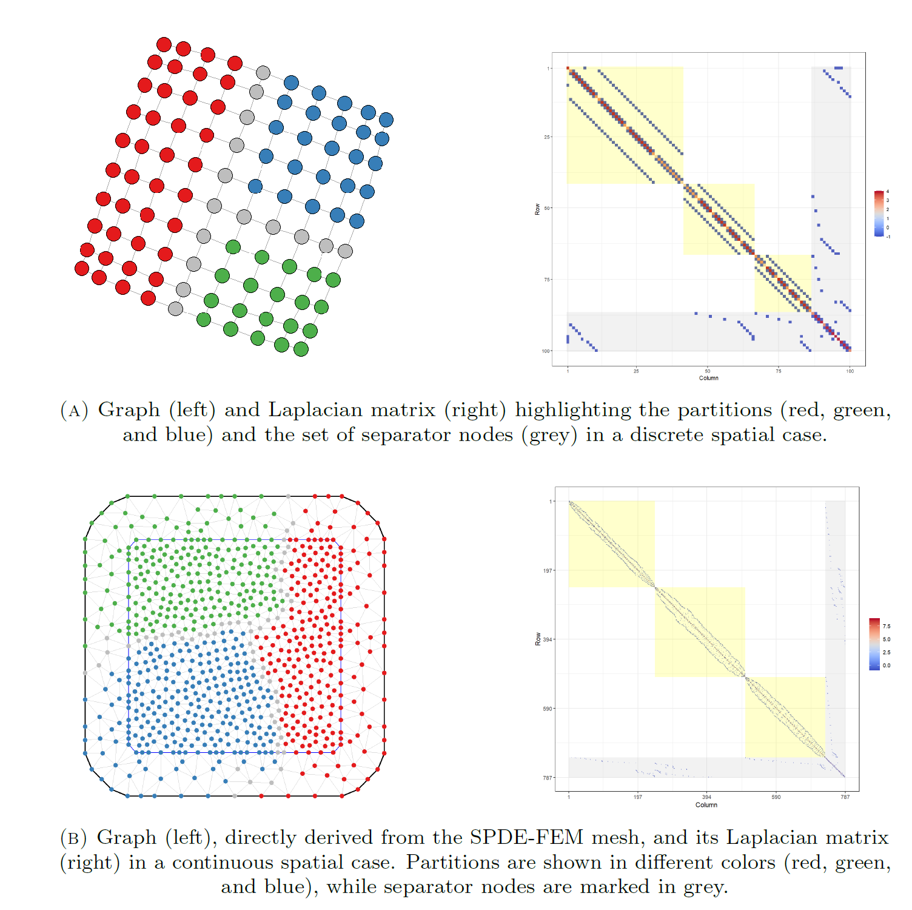
- Block-diagonal partitioning (bandwidth reduction),
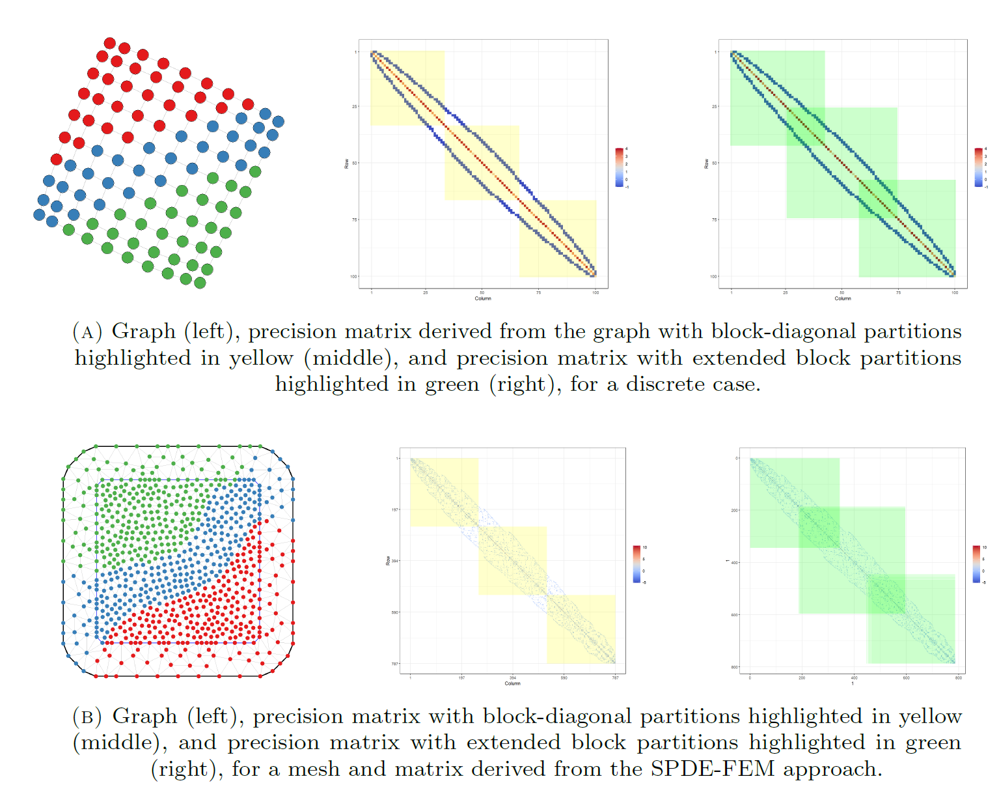
- Spectral clustering for graph partitioning, and
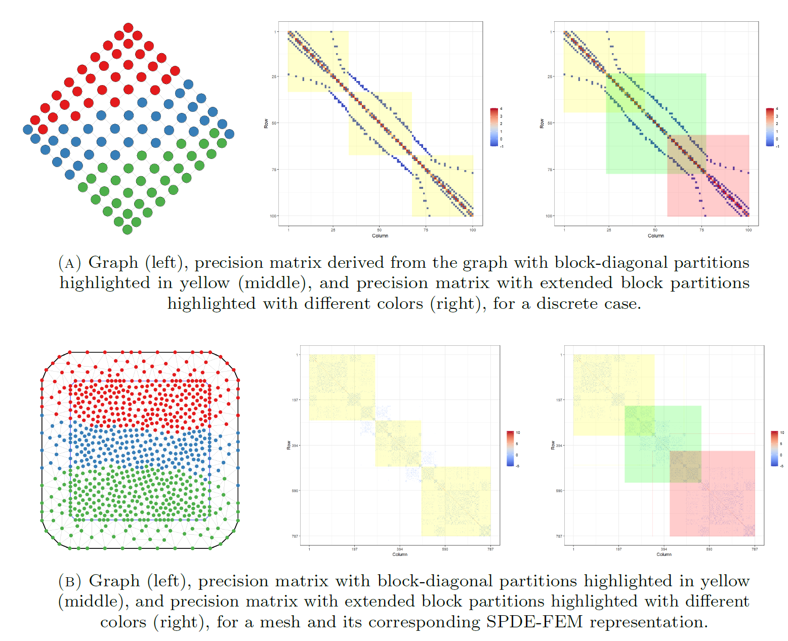
- Block partitioning via Voronoi tessellation.
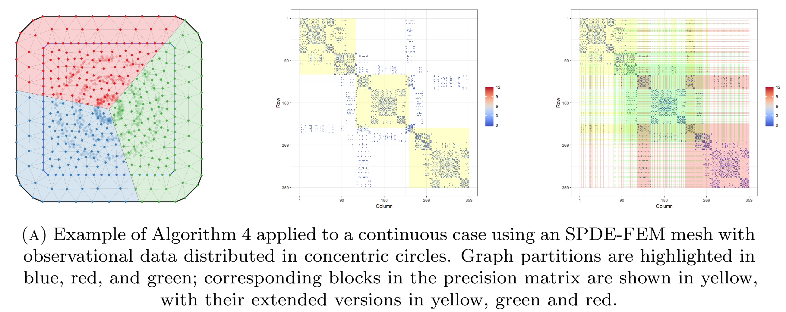
Combining Distributed and Recursive Inference
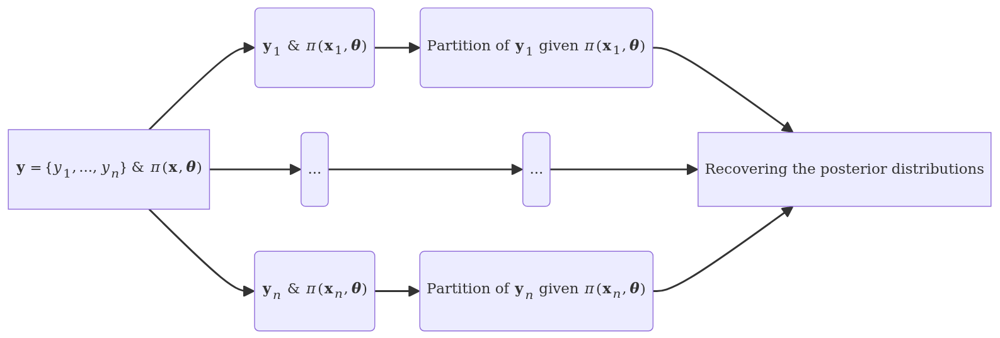
Conclusions
Conclusions
Spatial and spatio-temporal models are a cornerstone for analyzing data across many fields. There is significant potential to improve and innovate modeling approaches. Today, the large volume of data and the complexity of models also demand methodological and computational advances to address challenges such as information transfer and sharing across statistical models, enable efficient Bayesian inference in complex spatio-temporal settings, and tackle difficulties in the spatio-temporal analysis of compositional data (CoDa).